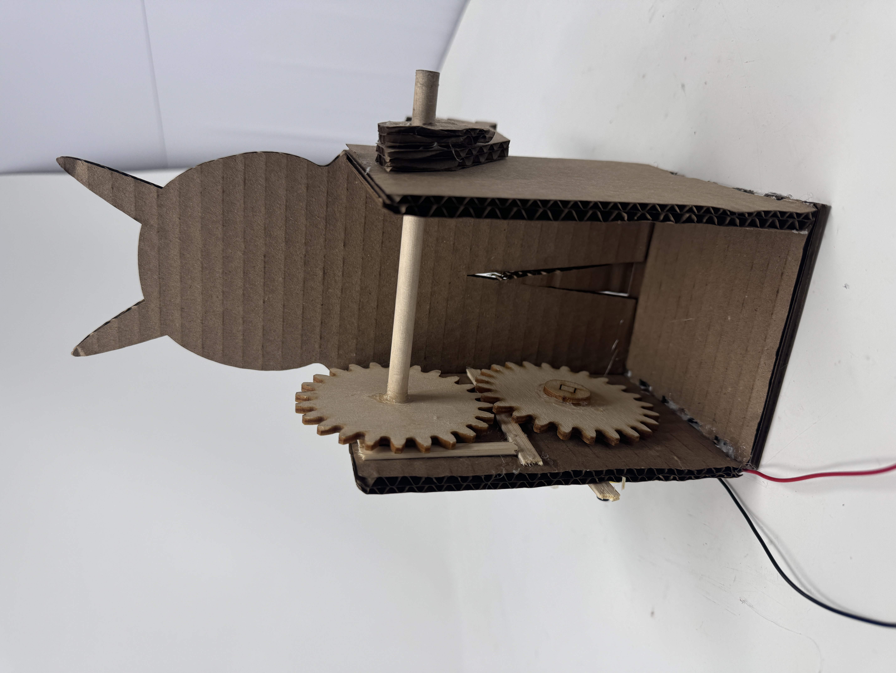

<div class="textcontainer">
<p class="margin"> </p>
<h3>Week 3: Hand Tools and Fabrication</h3>
<h4>Kinetic Sculpture</h4>
<p class="margin">
This week's assignment was to design and build a kenetic sculpture. My idea of a kenetic sculpture is directly related to my final project, which is a dancing robot (hopefully I stick with it). Initially, I wanted to design a robot that is able to move front and back periodically, and at the same time rotate the arms in opposing directons (if left goes clockwise, right goes counter-clockwise). The sketch below shows how the initial idea would look like(which I am going to explore in the future).
</p>
<div>
<img src="idea_1.jpg" alt="placeholder for you about me image" style="width: 400px; height: 250px; object-fit: cover; display: block; margin: left;">
</div>
<p class="margin">
The first version of my kinetic sculpture idea wasn’t ideal because it relied heavily on perpendicular gear connections. The concept was to have a single motor rotate periodically clockwise and counterclockwise. That motion would drive a rack and pinion system to create forward and backward movement. At the same time, the motor would connect to spur gears controlling each arm — one for the left and one for the right — so the arms would rotate in opposite directions.
<br>
The problem with this design was that it involved tight gear interactions, including perpendicular gears, which are difficult to execute using mostly wooden materials (I figured shoutout to Bobby). Wooden gears couldn't mesh as precisely, and the required alignments were hard to achieve with the tools and materials available.
<br>
So, I ended up doing to simplified version of the original idea. In this version, the arms rotate in the same direction, powered by one motor that reverses direction periodically by the code provided in lecture.
That said, I still ran into mechanical issues:
<br>
Friction between gear surfaces made rotation inconsistent — the gears didn’t line up well enough for smooth a constant movement. <br>
The motor wasn’t secured tightly, which allowed too much freedom of movement of the motor, thus uncontrolled movement. As a result, the gears shifted and couldn’t stay in place. <br>
I plan to iterate on the design next week, focusing on better managing friction and spacing between gears, securing the motor properly to keep gear alignment stable, and finally exploring alternate materials or gear types if possible (or then see if there is a way I use just one gear instead of meshing gears of the purpose of moving arms)
</p>
<p>Below are demo videos for this assignment</p>
<<video width="640" height="360" controls autoplay muted loop>
<source src="intended movement.mp4" type="video/mp4">
I hope your browser supports the video tag.
</video>
<p>Now, this is what is actually happening :((((</p>
<<video width="640" height="360" controls autoplay muted loop>
<source src="so_far.mp4" type="video/mp4">
I hope your browser supports the video tag.
</video>
<p>
Finally, this is the picture of how the gears were meshed together.
<div>
<p></p>
</div>
</div>